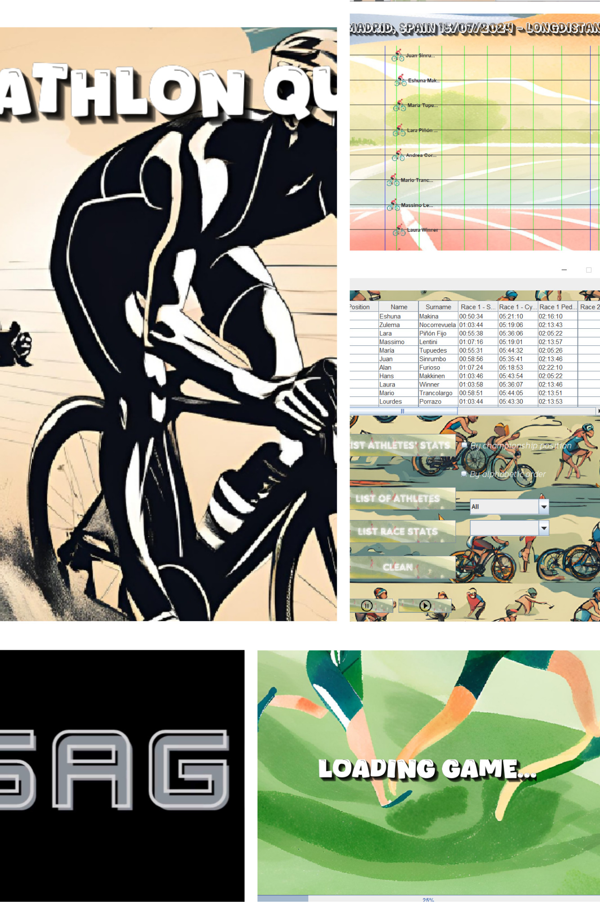

Soy una persona responsable y ordenada, con amplios conocimientos en informática, programación y análisis de información. Actualmente, curso la carrera de Ingeniería en Informática en la Universidad FASTA.
üìå Cursos en HILET: Microsoft Excel, Word y PowerPoint.
üìå Curso de Desarrollo Java en la UTN.
✅ Especificación de Requerimientos del Sistema (SRS): Documentación detallada que define los objetivos, requisitos y alcance del sistema de gestión de equipamiento médico.
✅ Definición de Requerimientos Funcionales y No Funcionales: Descripción exhaustiva de las funcionalidades esenciales que debe cubrir el sistema y los requisitos de calidad, rendimiento, seguridad, entre otros, que deben cumplirse para garantizar su operación óptima.
✅ Casos de Uso del Sistema de Tecnovigilancia: Escenarios prácticos que describen cómo los diferentes tipos de usuarios interactuarán con el sistema en diversas situaciones, permitiendo visualizar las funcionalidades desde la perspectiva del usuario final.
✅ Diagramas de Colaboración entre Objetos: Representación gráfica que ilustra cómo los diferentes objetos del sistema colaboran y se comunican entre sí para cumplir con cada funcionalidad..
✅ Plan de Implementación del Proyecto de Tecnovigilancia: Descripción del proceso sugerido para la introducción del sistema en la organización, abarcando fases de despliegue, capacitación, pruebas piloto y ajustes post-implementación.
✅ Gestión de Riesgos del Sistema de Tecnovigilancia: Identificación, evaluación y estrategias de mitigación para los riesgos más críticos que podrían afectar el éxito del sistema, tales como riesgos técnicos, operacionales y organizacionales.
Sistema de Gestión de Equipamiento Médico para Tecnovigilancia Este sistema está diseñado para abordar las necesidades de gestión del equipamiento médico de una institución de salud, especialmente en áreas de alta tecnología como Tecnovigilancia. El sistema permite el inventario y mantenimiento de equipos esenciales en la atención de los pacientes, permitiendo a la institución registrar, controlar y seguir el estado y uso de estos equipos.
✅Inventario Completo del Equipamiento Médico: Registro detallado de todos los equipos clasificados por tipo (p. ej., respiradores, monitores, camas, etc.), ubicación, estado y proveedor.
✅Gestión de Mantenimiento: Control de mantenimientos preventivos y correctivos, realizados por proveedores externos. Para el caso de los respiradores, se incluye un seguimiento específico basado en horas de uso con alertas y notificaciones según el estado del equipo.
✅Seguimiento del Estado del Equipo: Visualización y actualización del estado de los equipos en tiempo real, manteniendo registro de los estados básicos (En uso, En espera de servicio, Disponibles, En mantenimiento, etc.).

✅ Programación Orientada a Objetos en Java : Encapsulamiento, Herencia, Polimorfismo y abstracción.
✅Programación Multihilos.
✅Conexión a Bases de Datos.
✅Uso de XML.
✅ Interfaces Gráficas.
✅Manejo de eventos .Captura de eventos con Listener.
Es un sistema de simulación diseñado para modelar y gestionar competiciones de triatlón. El software permite realizar un seguimiento detallado de las etapas de natación, ciclismo y carrera, así como gestionar los tiempos de los participantes y generar estadísticas relacionadas con su rendimiento . En este sistema se utilizan los Software : intellij y eclipse.
✅ Simulación de eventos: Permite simular cada etapa del triatlón con tiempos realistas y escenarios personalizados.
✅Gestión de participantes: Registro y seguimiento de competidores, con sus tiempos detallados en cada fase del triatlón.
✅Generación de reportes: Proporciona análisis y estadísticas de rendimiento al finalizar cada simulación.
✅Interfaz gráfica intuitiva: Desarrollada en IntelliJ y Eclipse, con una interfaz amigable que facilita su uso y navegación.
✅Gestión de dependencias con Maven: El proyecto utiliza Maven para gestionar las dependencias y facilitar la compilación, construcción y ejecución del sistema, garantizando que todas las bibliotecas y configuraciones estén centralizadas y fácilmente accesibles.
